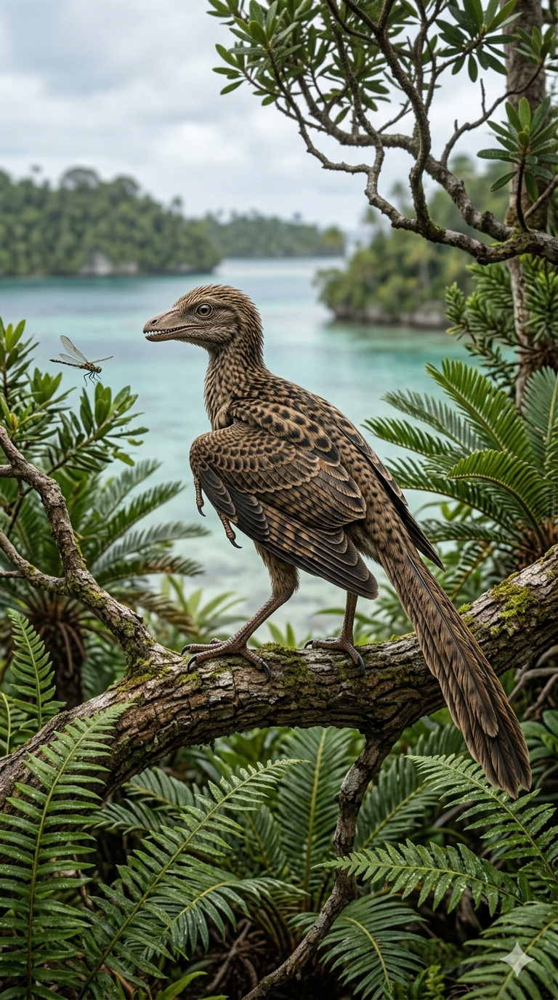
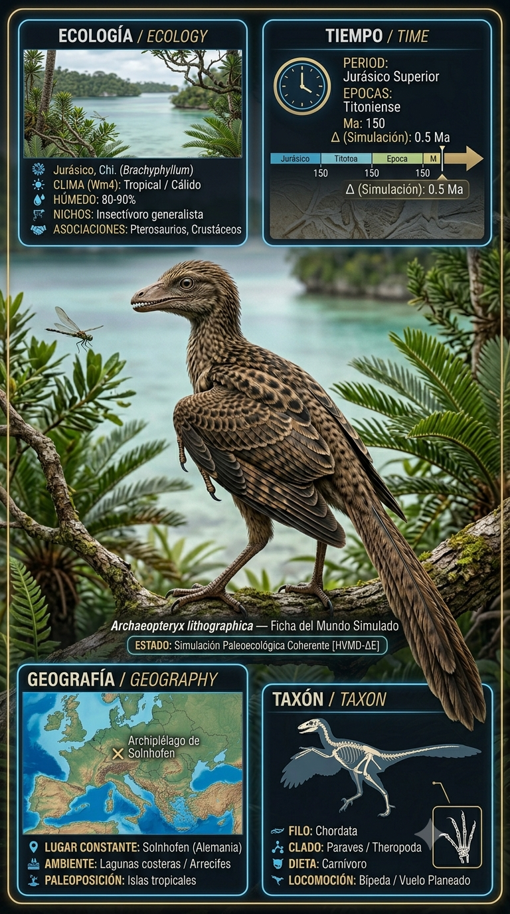
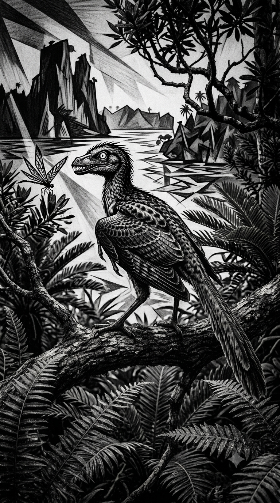
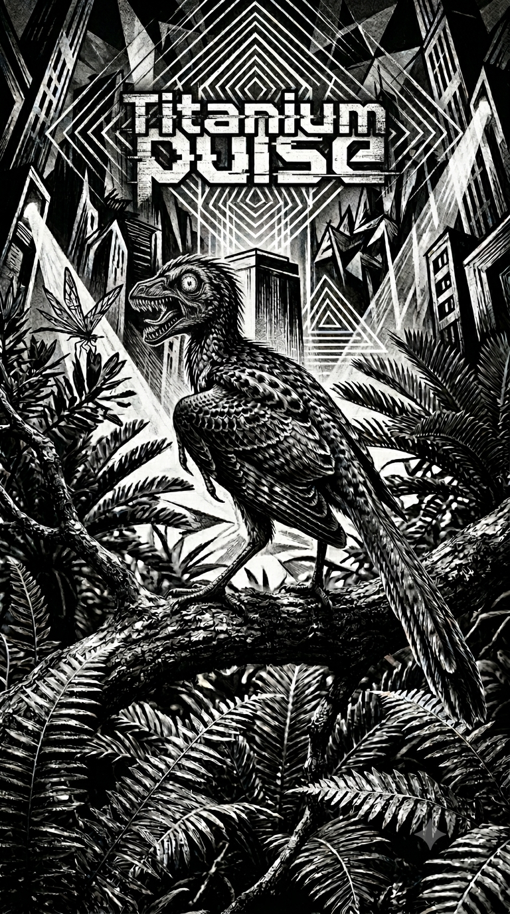

Paleoficha de Archaeopteryx




Periodo: Jurásico Superior
Edad: Hace aproximadamente 150 millones de años.
Dieta: Generalista / Insectívoro.
Distribución: Calizas de Solnhofen, Baviera (Alemania).
TAXÓN:
Archaeopteryx lithographica
CLADO: Avialae (dinosaurios terópodos no avianos con plumas)
DIETA: Generalista / Insectívoro
TAMAÑO: Aproximadamente 50 cm de longitud (similar a una urraca)
LOCOMOCIÓN: Terrestre con capacidades de vuelo batido limitado o planeo.
TIEMPO:
Jurásico Superior (Kimmeridgiense), aproximadamente 150 millones de años.
GEOGRAFÍA:
Calizas de Solnhofen, Baviera (Alemania). Archipiélagos de islas carbonatadas en un mar poco profundo. Ambiente paleoecológico de lagunas costeras protegidas con fondos anóxicos.
ECOLOGÍA:
Flora formada por cicadáceas, coníferas y helechos. Fauna asociada con Rhamphorhynchus, Compsognathus, peces y crustáceos. Habitaba arbustos y zonas costeras alimentándose de insectos y pequeños vertebrados. Podía ser presa de pterosaurios y dinosaurios terópodos de mayor tamaño.
CLIMA:
Wm10 (Marino costero). Tropical/Subtropical, cálido y estable.
ESTADO ECOLÓGICO:
Estable. Representa una transición morfológica fundamental entre los dinosaurios terópodos y las aves modernas.
Vídeo PalEntropía:
▶ Ver Short en YouTube